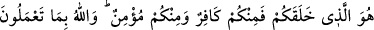
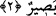

demek olur. Çünkü herşeyi ilk kez yaratan O’dur, ayakta tutan O’dur. Herşeyi gözeten,
dilediği gibi tasarruf eden O’dur. Nimetlerin öz olarak asıllarını ve kısımlarını veren
O’dur. Şâyet O, kullarına nimet vermemiş olsaydı hiçbir kimse nimet adına en küçük bir
nesneyi bile veremezdi. Şu halde mü’minler O’nun verdiği nimetlere karşılık
hamdederler. Önünde de sonunda da hamd O’nundur. Buna karşılık başkasının mülkü ise
kendinden değildir, başkası o mülkü Yüce Allah’ın yüce katından ödünç olarak almıştır,
O’nun imkân vermesi ile elde etmiştir. Başkasına hamd etmek, demek, Allah’ın nimetini
o kimsenin elinde cereyan ediyor kabul etmek demektir. İnsanoğlunun mülkü vardır,
beşer hamd sâhibi de olur, ancak bütün bunlar sadece şeklîdir, yoksa gerçek anlamda
insanoğlunun mülkü de yoktur o hamd sâhibi de değildir.
O’ndan başkasına şahlık nisbeti;
Satrançta bir iki ağaç parçasına “şah” adı vermek gibidir.”
“O herşeye kadirdir.” Çünkü kudreti gerektiren zâtının herşeye nisbet edilmesi eşittir.
O yoktan var etmeye, yok etmeye, hasta etmeye, hastalıktan iyileştirmeye, aziz etmeye,
zelil kılmaya, beyaz ve siyah etmeye ve bunlardan başka ve buna benzer sayısız şeyleri
yapmaya kadirdir.
Âriflerden biri der ki: Allah’ın kudreti yaratmaya elverişli bir kudrettir. Kulun kudreti
ise kesbe; yâni kazanmaya elverişlidir. Allah Teâlâ’nın kadir olduğunu bilen kişi,
emirlerine aykırı davranırsa O’nun vereceği cezânın şiddetinden korkar. Kulun
ihtiyacını dilediği esnada, O’nun nimetinin ve rahmetinin latifelerini umması Allah’a
itâatı vesîlesi ile olmaz, tam tersine Yüce Allah’ın sırf keremi ve lutfu sayesinde olur.
et-Te’vilatu’n-necmiyye’de şöyle denir: O’nun noksan sıfatlardan münezzeh olan
mukaddes zâtını, benzeri ve zıddı olmaktan, şekli ve eşi bulunmaktan, göklerdeki rûhânî
güçlerle yeryüzündeki cismânî güçler tesbih ederler. Mutlak varlık O’nundur, mukayyed
varlık dünyasında zuhûr etmesi nimetine hamd O’na âiddir. O’nun mutlak hüviyyeti
mutlak olarak zuhur etmeye kadir olduğu gibi mukayyed olarak zuhur etmeye de kadirdir.
O’nun mutlak varlığı bizatihî bu iki zuhur edişten de münezzehtir. Bu iki ortaya çıkış iki
itibarî nisbetten ibârettir.
2. Sizi yaratan O’dur. Böyle iken kiminiz kâfir, kiminiz mümindir. Allah
yaptıklarınızı görendir.
“Sizi” benzersiz ve bütün ilmî ve amelî kemâlâtın esaslarını kapsayan bir yaratışla
“yaratan O’dur. Böyle iken kiminiz kâfir” yâni bazınız ya da sizden bazıları
yaratılışının gereği olarak inkârı seçmiş ve onu kazanmıştır. Buna münâfık da dâhildir